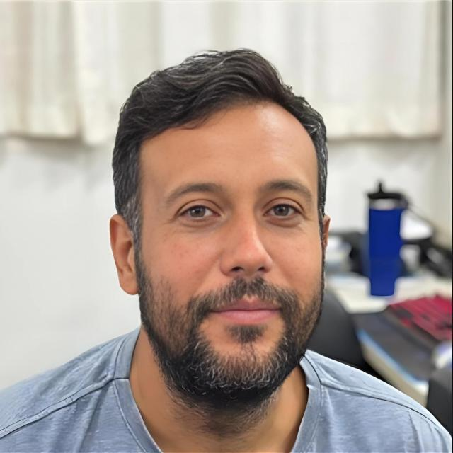

Rua BB 0, Rio de Janeiro, Brasil.
(21)9999-99999
Flavioluciocurado@gmail.com
www.meusite.com.br
Colégio Técnico Excelsior
Curso Técnico em Informática.
Concluído em 12/2006
FIS – Faculdades Integradas Simonsen
Graduação em Tecnologia e Análise em Desenvolvimento de Sistemas
Incompleto.
CENTRO UNIVERSITÁRIO INTERNACIONAL UNINTER
CST ANÁLISE E DESENVOLVIMENTO DE SISTEMAS - DISTÂNCIA
Cursando
Inglês técnico
Suporte Técnico a usuário, configuração de impressoras, pacote Office 2007, 2010, 2016 e 365 (Teams, OneDrive, Planner, SharePoint, Forms); Manutenção de computadores e notebook. Criar, sustentar e aplicar imagens em notebooks e desktops. Manutenção corretiva, atualizações e limpeza de sistema nas estações do parque. Domínio em plataforma Windows 7, 8 e 10; Manutenção corretiva de pendrivers e HD externo; Controle e implantação de Máquina Virtuais (Hyper-V, VmWare e Proxmox). Administração de e-mails office 365, criação de usuário no AD, DNS, DHCP, FileServer, PrintServer, servidores Windows 2008 e 2016, servidor de antivírus Kaspersky, Firewall (Implementação, Configurações e Políticas de Segurança) – Pfsense, virtualização de servidores, backup de servidores, gerenciamento Unifi; Implantação de Serviço de Acesso Remoto na empresa (Ultra VNC, Anydesk, Team Viewer). ITIL/COBIT. Cabeamento estruturado, suporte ao sistema Totvs, cotação de materiais e dar apoio em outras unidades; Treinamento técnico e desenvolvimento de habilidades com os estagiários /competências voltadas ao relacionamento com clientes. Desenvolvimento de profissionais com foco em Alta Performance utilizando metodologias experienciais.
Atividades Desenvolvidas: Planejamento, Coordenação, Organização e Implementação de processos para utilização de recursos de TI na esfera da administração pública; Produção de relatórios dinâmicos e suporte à gestão. Gerenciei com a colaboração da equipe o projeto em todos seus estágios, levantamento dos requisitos, tempestade de ideias e planejando toda área de TI, envolvendo infra-estrutura e sistemas, atuaram na governança de TI e engenharia de processos, elaborei estratégias e procedimentos de contingências. Minha função foi supervisionar, planejar e controlar a área de operações, traçando estratégias juntamente com a coordenação, acompanhando os resultados, analisando os indicadores da área, efetuando reuniões, identificando dificuldades administrativas e processuais, avaliando e orientando a minha equipe de trabalho no desenvolvimento das atividades, visando aperfeiçoar os processos. Trabalhava com sistemas operacionais, rede de dados (cabeamento e Protocolos de rede TCP/IP), rotinas de backup, LINUX, Microsoft contemplando: Active Directory e Windows Server 2003/2008/2012; VMWare, Firewall, configuração de switches e Administração de Servidores. Conhecimento de segurança de informação básico e em sistemas de telefonia e VoIP. Planejei, executei e acompanhei a instalação e manutenção de softwares/sistemas contratados e/ou de apoio, de cada seção/órgão com seus respectivos serviços (circuitos de dados e voz), analisando as rotinas e procedimentos envolvidos, verificando benefícios e problemas e implementando os ajustes necessários. Atualizei as versões de softwares e dos aplicativos utilizados na Unidade. Cuidei dos arquivos da Prefeitura, bem como por sua segurança lógica com rotinas de backup. Controle e liberação e restrição de acesso aos sites, sistemas e serviços. Prestei suporte aos usuários da rede de computadores, envolvendo a montagem, reparos e configurações dos equipamentos e na utilização do hardware e software disponíveis, impressão e também na área de Telecom. Treinei e orientei possíveis dúvidas do usuário quanto à operação do sistema e sua utilização. Executei manutenção preventiva e corretiva.
Atividades Desenvolvidas: Desenvolvi portais de conteúdo em WordPress, programei, codifiquei e testei linguagens de programação. PHP, MYSQL, JavaScript, CSS, HTML, WordPress, Moodle.
Atividades Desenvolvidas: Efetivado como Técnico de Informática, exercendo as mesmas atividades, incluindo controle de estoque, inventário, financeiro e tesoureiro. Experiência com sistema de automação comercial e Gestão de Negócios ASASYS.